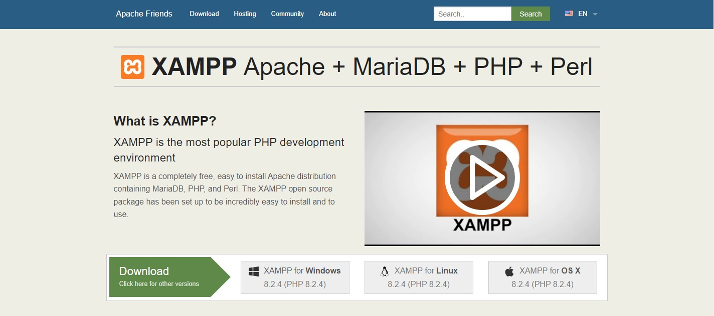
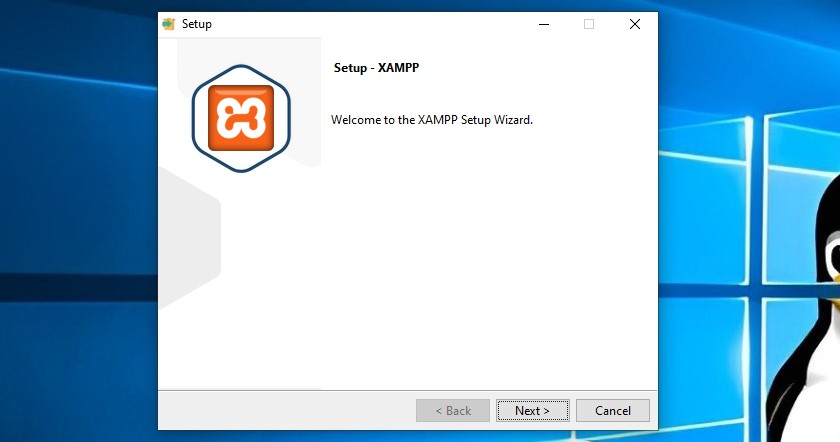
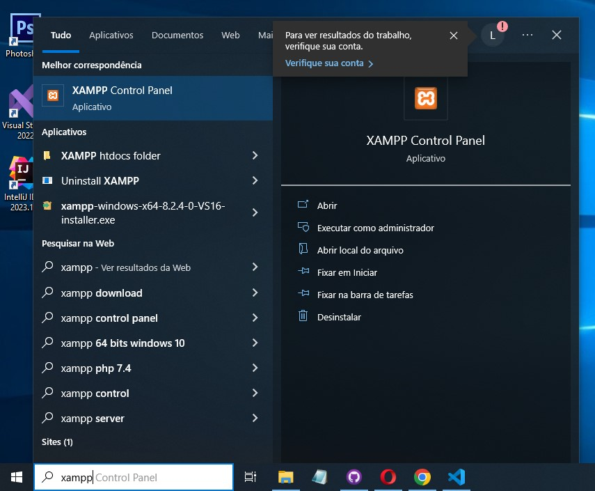
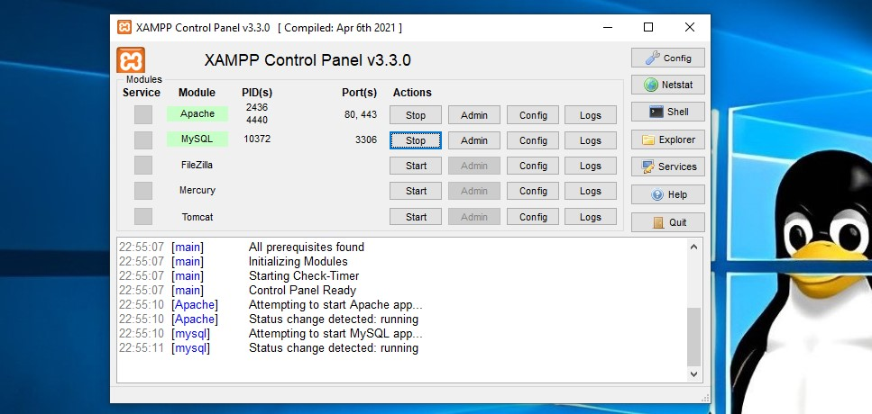
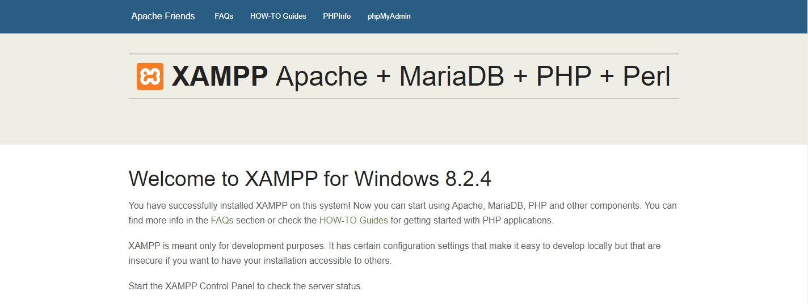
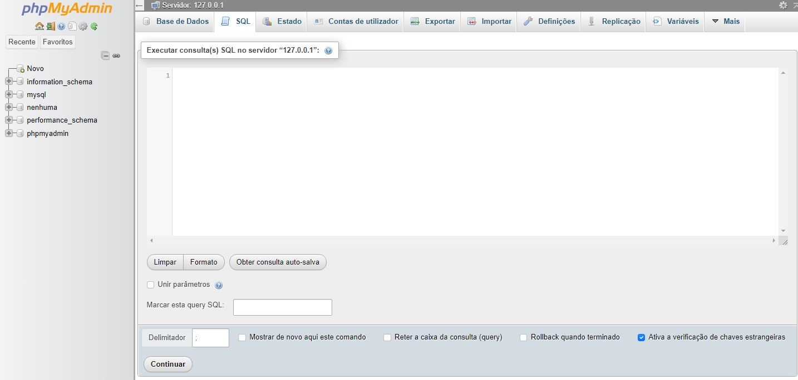

Instalação do XAMPP
Primeiro, acesse o site apachefriends.org e escolha a opção de download.
Depois execute o instalador.
Após a instalação, execute o XAMPP e ative as opções Apache e MySQL
 No Chrome, digite localhost na busca da url. Você será redirecionado para o menu do PhpMyAdmin. No cabeçalho, entre na opção PhpMyAdmin.
Após isso, você estará dentro do PhpMyAdmin. Acima, selecione a opção SQL, é lá que será executado os comandos.
